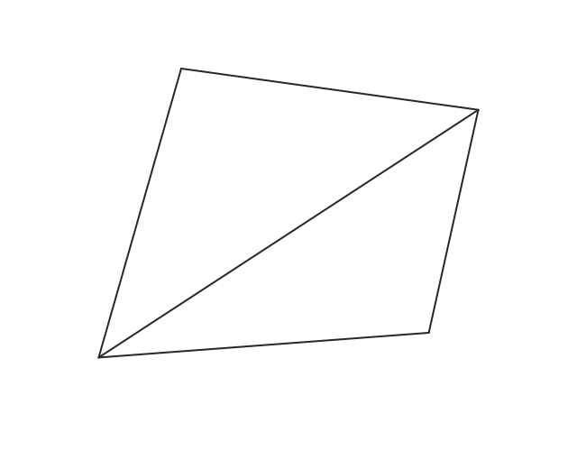
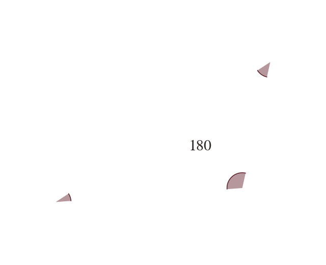
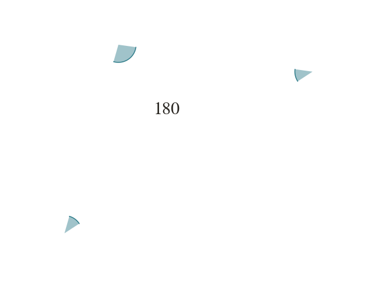
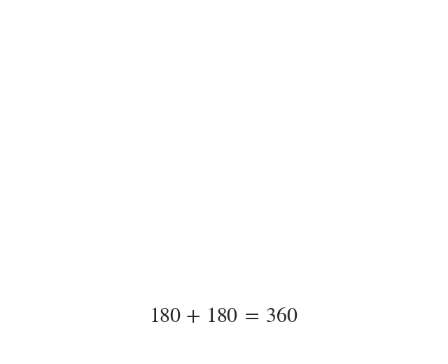

The sum
The four angles inside any quadrilateral sum to One diagonal splits it into two triangles. Two triangles of each make
The four angles inside any quadrilateral sum to This follows directly from splitting the quadrilateral into two triangles with a single diagonal: each triangle's angles sum to and together the two triangles' angles make up all four of the quadrilateral's angles, so